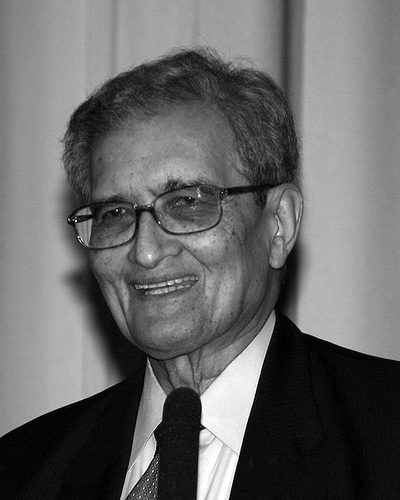

Ideologies / Liberal
What is Capabilities Approach?
Capabilities Approach is a political ideology in the Liberal family. Sen argues that development should be measured by the real freedoms people have to live lives they value, not by income or output alone. Poverty is a lack of basic capabilities such as health, literacy and a voice in public affairs. Markets matter as part of freedom, but so do public education, health care, a free press and democratic elections, and he observes that famines do not occur in working democracies. The agency of women is treated as central.
A society succeeds by what its people are actually able to do and to be.
Defined from: Amartya Sen, Development as Freedom (1999)
See how close you are to Capabilities Approach Dare a friend to answer as one


Where Capabilities Approach stands on 13 axes
Each axis runs from 0 to 100. A score of 50 is the middle. On a classic compass it sits in the Libertarian Right quadrant.
| Axis | Position | Score | In words |
|---|---|---|---|
| EconomyMarket to Planned | 40 | Leans Market | |
| OwnershipPrivate to Collective | 30 | Strongly Private | |
| RightsLiberty to Security | 15 | Very strongly Liberty | |
| GovernmentDemocracy to Autocracy | 0 | Very strongly Democracy | |
| StructureDecentralised to Centralised | 45 | Balanced | |
| NationInternationalist to Nationalist | 5 | Very strongly Internationalist | |
| ImmigrationMulticulturalist to Assimilationist | 10 | Very strongly Multiculturalist | |
| ValuesProgressive to Traditional | 20 | Strongly Progressive | |
| TechnologyAccelerationist to Precautionary | 35 | Leans Accelerationist | |
| EnvironmentIndustrialist to Environmentalist | 45 | Balanced | |
| ReligionSecular to Religious | 10 | Very strongly Secular | |
| MilitaryPacifist to Militarist | 20 | Strongly Pacifist | |
| TradeFree Trade to Protectionist | 30 | Strongly Free Trade |
Ideologies closest to Capabilities Approach
- Social Liberalism90% alike
- Radical Democracy87% alike
- Liberal Socialism86% alike
- Civic Republicanism86% alike
- New Liberalism86% alike
Its opposite on this map is Juche, at 17%.
Parties near Capabilities Approach
- Alliance Party of Northern IrelandUnited Kingdom. Leading Change (2024)85% alike
- Students for a Democratic SocietyUnited States. The Port Huron Statement (1962)84% alike
- Liberal DemocratsUnited Kingdom. For a Fair Deal (2024)84% alike
- Spanish Socialist Workers' PartySpain. Adelante (2023)83% alike
Common questions
What is Capabilities Approach?
Capabilities Approach is a political ideology in the Liberal family. Sen argues that development should be measured by the real freedoms people have to live lives they value, not by income or output alone. Poverty is a lack of basic capabilities such as health, literacy and a voice in public affairs. Markets matter as part of freedom, but so do public education, health care, a free press and democratic elections, and he observes that famines do not occur in working democracies. The agency of women is treated as central.
What does Capabilities Approach believe?
In one line: A society succeeds by what its people are actually able to do and to be. Its strongest positions are Democracy, Internationalist, Multiculturalist. Sen argues that development should be measured by the real freedoms people have to live lives they value, not by income or output alone. Poverty is a lack of basic capabilities such as health, literacy and a voice in public affairs. Markets matter as part of freedom, but so do public education, health care, a free press and democratic elections, and he observes that famines do not occur in working democracies. The agency of women is treated as central.
Who founded Capabilities Approach?
Capabilities Approach is defined here from Development as Freedom (1999) by Amartya Sen. The thinker most tied to it is Amartya Sen (born 1933).
Is Capabilities Approach left wing or right wing?
On a classic two axis compass Capabilities Approach falls in the Libertarian Right quadrant, which means the economic right and the libertarian side. Left and right hide a lot, though, which is why EthosScales scores it on thirteen separate axes.
How is Capabilities Approach different from Social Liberalism?
They are close, at a 90% match. The biggest gaps are on Nation, where Capabilities Approach scores 5 and Social Liberalism scores 25, and Immigration, where Capabilities Approach scores 10 and Social Liberalism scores 20. On each axis, 0 is one end and 100 is the other.
Think this is wrong? Suggest a correction. The scores are editorial estimates.